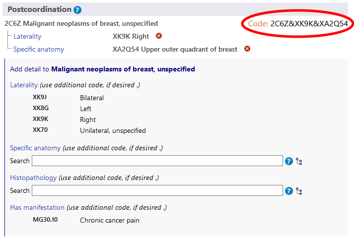
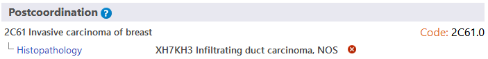

ZH
ZH
后组配系统允许给选择的实体补充更多细节信息。不同分类可以补充不同类型信息。例如，为大部分的肿瘤分类补充额外的肿瘤形态学信息，但该补充的信息不可用于其他分类。
当你在ICD-11浏览器中选择一个实体时，后组配区域仅能显示可能的适用于该实体的后组配轴心。
一些分类包含的信息不完整，从而不能满足ICD的多用途应用。 在此类案例中， 注释(另编码)提示我们仍需要为该轴心补充信息。
一些后组配轴心能够从较小的数据集中直接获得数值，例如侧别。 而一些轴心可以从很大的数据集获得数值，例如肿瘤形态学。
 符号浏览子层级结构。
符号浏览子层级结构。
构建编码时，你需要点击层级结构、短列表或查找结果中显示的数值。 下面例子显示的是乳腺恶性肿瘤同时给出单侧和具体部位信息的情况。生成的编码将显示在后组配区域的左上方。
对于大部分后组配轴心，系统仅允许每个轴心选择一个数值。例如，当选择后组配数值“重度”时，此时不可以再同时选择“轻度”和”中度”。但是在某些轴心，系统允许选择多个数值。允许使用多个数值的轴心如下：
对于这些轴心，你可以提供更多数值。例如：当被允许使用某特定解剖部位作为后组配时，你可以选择多个部位。
对于其他外因轴心，仅当来源于不同类别时我们允许使用多个数值。
例如, 当使用交通事件描述 轴心对 陆地运输交通事故意外伤及骑车人进行后组配时，我们可以从类别“陆地运输碰撞中对方受害者”中选择另一个数值，但我们不允许在相同类别中选择两个数值。
不允许使用同一轴心的多个数值时，用户点击第二个数值，系统会自动替换之前的数值。 例如，当你选择严重程度作为后组配时，如果你已经选择了“轻度”这一数值，此时点击中度数值 则会替换掉“轻度”数值。
在某些案例中，用户构建的编码组合可能与分类中已经存在的实体等同。此时，系统会自动使用预组配编码。 本例中, 用户已经选择了浸润性乳腺癌以及形态学后组配 浸润性导管癌, NOS. 但系统仅会给出一个编码而不是两个编码，因为分类中存在能够涵盖上述信息的 “2D00乳腺浸润性导管癌”，因此系统会给出该编码。
在某些案例中，系统允许对后组配数值提供更加详细的描述。(例如对后组配数值进行后组配)